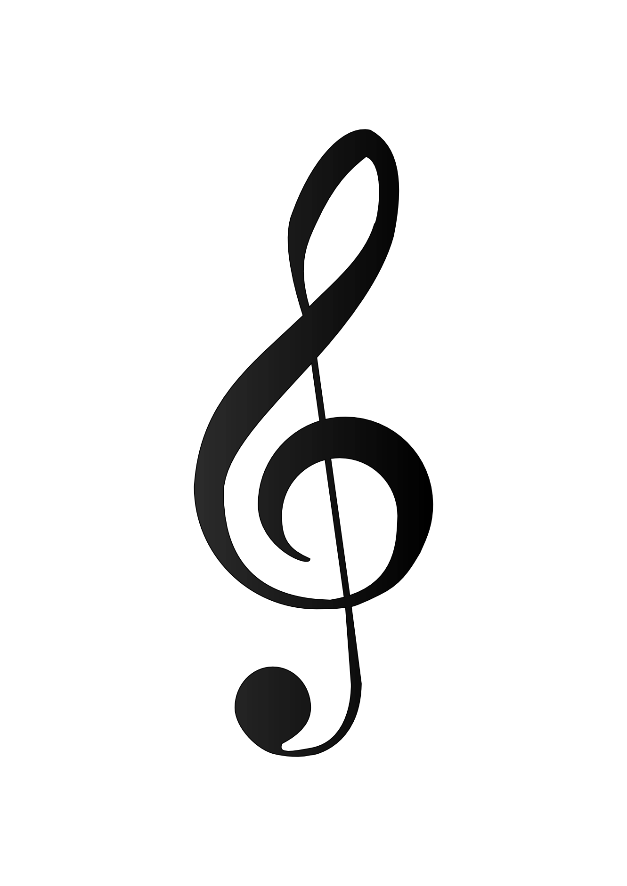

In this third week we will learn basic concepts about the guitar and music theory. The guitar is a 6 string musical instrument. The strings corresponds to E, A, D, G, B, e, which are from string number 6 to 1 respectively. The 6th string is having the lowest pitch and the first string have the highest pitch.
We will learn music notation for playing the guitar.
The notations are written on a 12 stave page.
In modern music, only four clefs are used regularly:
treble clef, bass clef, alto clef, and tenor clef. Of these,
the treble and bass clefs are by far the most common.
This is the treble clef sign.
This is the bass clef sign.

A Treble clef is also called G clef.And a Bass clef is also known as F clef.